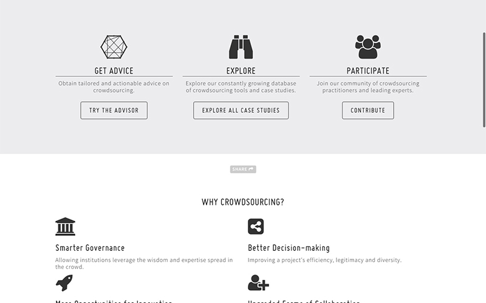
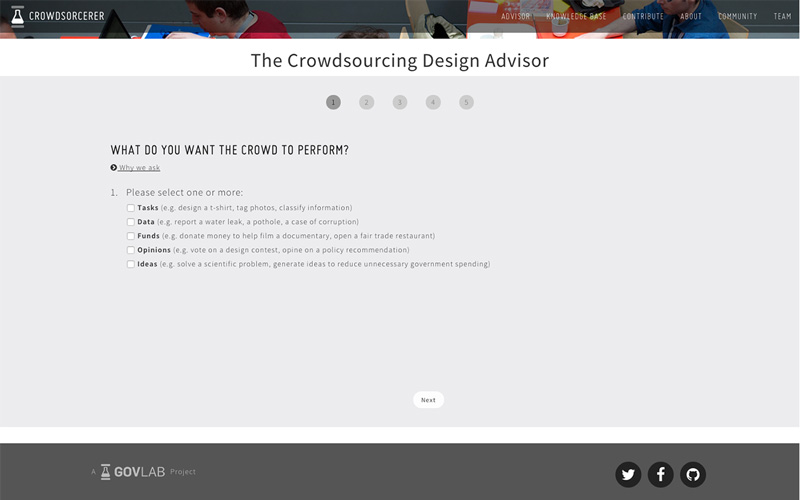
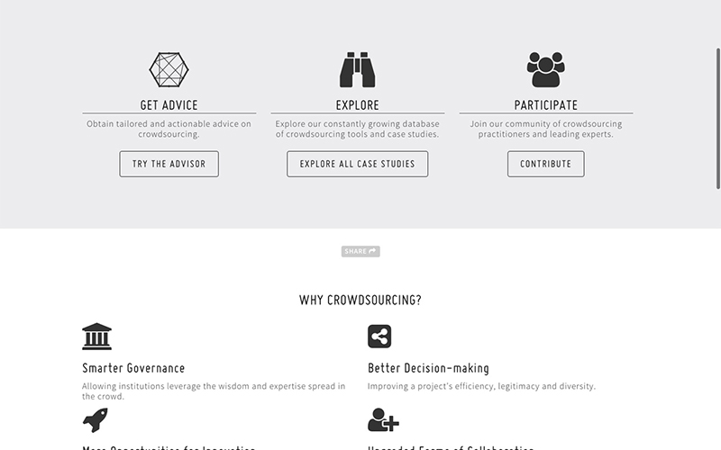
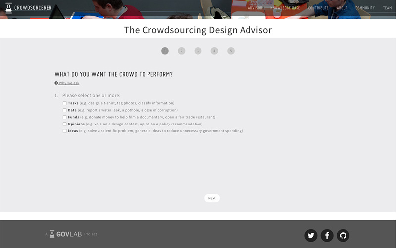

menu
Knowing when and how to use crowdsourcing is hard: there are more than 40 different definitions of crowdsourcing; there is little conclusive evidence of what works and when and, even though there is an abundance of tools and examples, information is disorganized and not well-suited to help a decision-maker know what to do. Under the assumption that there is no single right way of doing crowdsourcing but, rather, engagement must be tailored to each needs and circumstances, the Advisor builds on the experience of others and attempts to help decision-makers in the public and private sectors make an informed decision about when and how to use crowdsourcing.
Through a guided interview, the Crowdsourcing Advisor not only helps to identify the key elements one must consider when designing a crowdsourcing project, but also provides a report of the most important case studies (drawn from our knowledge-base) and learnings tailored to the needs and circumstances of the user.
 



 This work is licensed under a Creative Commons Attribution-ShareAlike 4.0 International License
This work is licensed under a Creative Commons Attribution-ShareAlike 4.0 International License